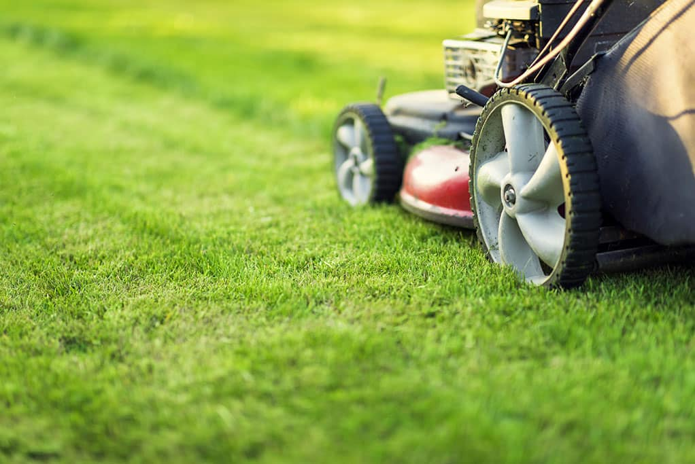
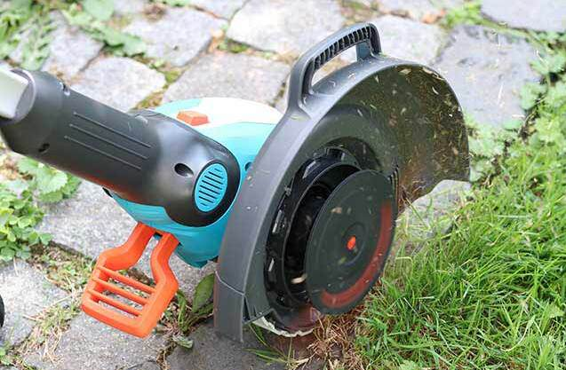
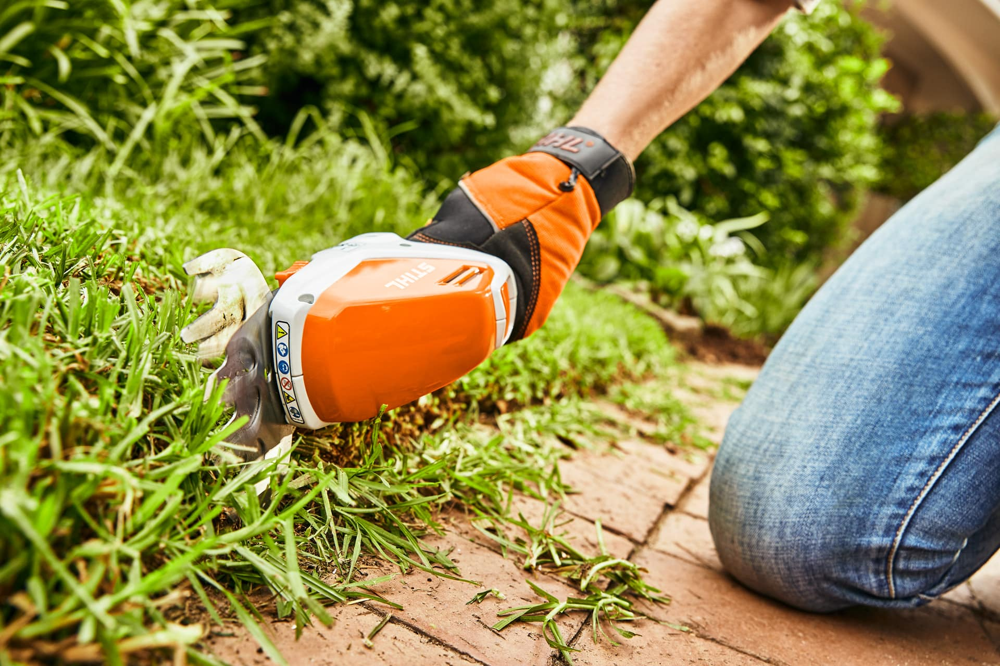
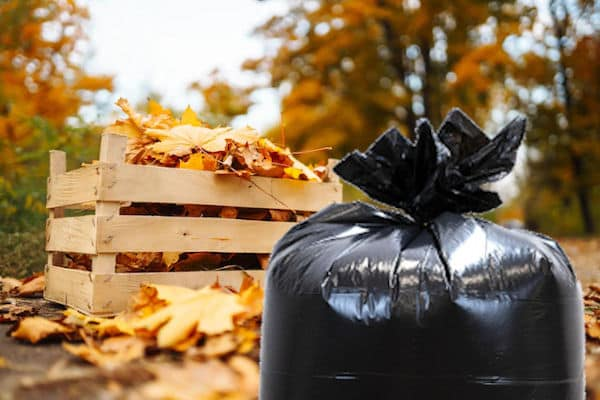
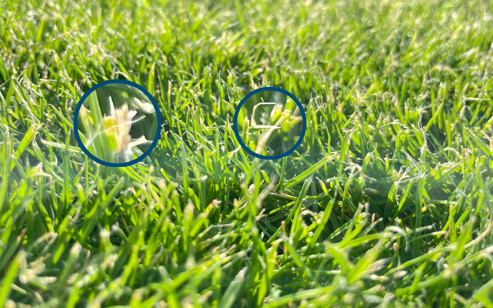

Rasenmähen (regelmäßig oder einmalig)

Rasenmähen (regelmäßig oder einmalig)
Fachgerechtes Rasenmähen als regelmäßige Pflege oder einmaliger Service. Wir schneiden den Rasen gleichmäßig, sorgen für ein gepflegtes Erscheinungsbild und unterstützen ein gesundes und gleichmäßiges Wachstum der Grünfläche.
Kontakt aufnehmenRasenkanten schneiden

Rasenkanten schneiden
Sauberes Schneiden von Rasenkanten für ein gepflegtes und ordentliches Erscheinungsbild des Gartens. Wir entfernen überstehendes Gras entlang von Wegen, Beeten und Rändern und sorgen für klare, gleichmäßige Abgrenzungen.
Kontakt aufnehmen
Manuell Rasenkanten schneiden
Sorgfältiges manuelles Schneiden von Rasenkanten für präzise und saubere Übergänge im Garten. Wir bearbeiten Kanten entlang von Beeten, Wegen und Rasenflächen mit Handwerkzeug und sorgen für ein gepflegtes, gleichmäßiges Erscheinungsbild.
Kontakt aufnehmenUnkrautentfernung im Rasen

Unkrautentfernung im Rasen (manuell)
Sorgfältige manuelle Entfernung von Unkraut im Rasen. Wir beseitigen störende Wildpflanzen an der Wurzel und sorgen für eine gepflegte, gleichmäßige und gesunde Rasenfläche ohne chemische Behandlung.
Kontakt aufnehmenLaub- & Grünabfallentfernung vom Rasen

Laub- & Grünabfallentfernung vom Rasen
Gründliche Entfernung von Laub, Ästen und Grünabfällen vom Rasen. Wir sorgen für eine saubere, gepflegte Rasenfläche und unterstützen die Gesundheit und das gleichmäßige Wachstum der Grünanlage.
Kontakt aufnehmenEinfache Rasenpflege & Sichtkontrolle

Einfache Rasenpflege & Sichtkontrolle
Regelmäßige einfache Rasenpflege mit gleichzeitiger Sichtkontrolle der Fläche. Wir entfernen grobe Verschmutzungen, prüfen den Zustand des Rasens und sorgen für ein gepflegtes, gesundes und ordentliches Erscheinungsbild.
Kontakt aufnehmen